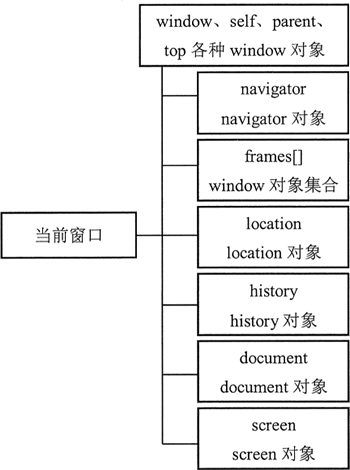
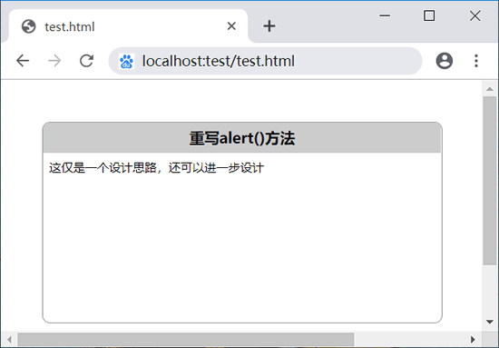

首页 > 编程笔记
JS window对象详解
window 是客户端浏览器对象模型的基类，window 对象是客户端 JavaScript 的全局对象。一个 window 对象实际上就是一个独立的窗口，对于框架页面来说，浏览器窗口每个框架都包含一个 window 对象。
使用 delete 运算符可以删除属性，但是不能删除变量。
也可以重置这些方法。设计思路：通过 HTML 方式在客户端输出一段 HTML 片段，然后使用 CSS 修饰对话框的显示样式，借助 JavaScript 来设计对话框的行为和交互效果。
显示系统对话框的时候，JavaScript 代码会停止执行，只有当关闭对话框之后，JavaScript 代码才会恢复执行。因此，不建议在实战中使用这 3 种方法，仅作为开发人员的内测工具即可。
该方法返回值为新创建的 window 对象，使用它可以引用新创建的窗口。
新创建的 window 对象拥有一个 opener 属性，引用打开它的原始对象。opener 只在弹出窗口的最外层 window 对象（top）中定义，而且指向调用 window.open() 方法的窗口或框架。
该方法返回值是一个 Timer ID，这个 ID 编号指向延迟执行的代码控制句柄。如果把这个句柄传递给 clearTimeout() 方法，则会取消代码的延迟执行。
该方法返回值是一个 Timer ID，这个 ID 编号指向对当前周期函数的执行引用，利用该值对计时器进行访问，如果把这个值传递给 clearTimeout() 方法，则会强制取消周期性执行的代码。
如果 setInterval() 方法的第 1 个参数是一个函数，则 setInterval() 方法可以接收任意多个参数，这些参数将作为该函数的参数使用。格式如下：
setTimeout() 方法不会每隔固定时间就执行一次动作，它受 JavaScript 任务队列的影响，只有前面没有任务时，才会按时延迟执行动作。而 setInterval() 方法不受任务队列的限制，它只是简单的每隔一定的时间就重复执行一次动作，如果前面任务还没有执行完毕，setInterval() 可能会插队按时执行动作。
每个框架都有一个 window 对象，使用 frames 可以访问每个 window 对象。frames 是一个数据集合，存储客户端浏览器中所有 window 对象，下标值从 0 开始，访问顺序为从左到右、从上到下。例如，top.window.frames[0]、parent.frames[0] 表示第一个框架的 window 对象。
使用 frame 标签的 name，可以以关联数组的形式访问每个 window 对象。例如，top.window.frames["left"] 表示第一个框架的 window 对象。
框架之间可以通过 window 相关属性进行引用，详细说明如下表所示。
这些方法都包含两个参数，分别表示 x 轴偏移值和 y 轴偏移值。包含 To 字符串的方法都是绝对的，也就是 x 和 y 是绝对位置、大小或滚动偏移；包含 By 字符串的方法都是相对的，也就是它们在窗口的当前位置、大小或滚动偏移上增加所指定的参数 x 和 y 的值。
方法 moveTo() 可以将窗口的左上角移动到指定的坐标，方法 moveBy() 可以将窗口上移、下移或左移、右移指定数量的像素。方法 resizeTo() 和 resizeBy() 可以按照绝对数量和相对数量调整窗口的大小。
window 对象还定义了 focus() 和 blur() 方法，用来控制窗口的显示焦点。调用 focus() 方法会请求系统将键盘焦点赋予窗口，调用 blur() 方法则会放弃键盘焦点。
全局作用域
在客户端浏览器中，window 对象是访问 BOM 的接口，如引用 document 对象的 document 属性，引用自身的 window 和 self 属性等。同时 window 也为客户端 JavaScript 提供全局作用域。示例
由于 window 是全局对象，因此所有的全局变量都被解析为该对象的属性。
var a = "window.a"; //全局变量
function f () { //全局函数
console.log(a);
}
console.log(window.a); //返回字符串“window.a”
window.f(); //返回字符串“window.a”
使用 delete 运算符可以删除属性，但是不能删除变量。
访问客户端对象
使用 window 对象可以访问客户端其他对象，这种关系构成浏览器对象模型，window 对象代表根节点，浏览器对象关系的关系如图所示，每个对象说明如下。- window：客户端 JavaScript 顶层对象。每当 <body> 或 <frameset> 标签出现时，window 对象就会被自动创建。
- navigator：包含客户端有关浏览器信息。
- screen：包含客户端屏幕的信息。
- history：包含浏览器窗口访问过的 URL 信息。
- location：包含当前网页文档的 URL 信息。
- document：包含整个 HTML 文档，可被用来访问文档内容及其所有页面元素。

使用系统对话框
window 对象定义了 3 个人机交互的方法，主要方便对 JavaScript 代码进行调试。- alert()：确定提示框。由浏览器向用户弹出提示性信息。该方法包含一个可选的提示信息参数。如果没有指定参数，则弹出一个空的对话框。
- confirm()：选择提示框。。由浏览器向用户弹出提示性信息，弹出的对话框中包含两个按钮，分别表示“确定”和“取消”按钮。如果点击“确定”按钮，则该方法将返回 true；单击“取消”按钮，则返回 false。confirm() 方法也包含一个可选的提示信息参数，如果没有指定参数，则弹出一个空的对话框。
- prompt()：输入提示框。可以接收用户输入的信息，并返回输入的信息。prompt() 方法也包含一个可选的提示信息参数，如果没有指定参数，则弹出一个没有提示信息的输入文本对话框。
示例1
下面示例演示了如何综合调用这 3 个方法来设计一个人机交互的对话。
var user = prompt("请输入您的用户名");
if (!! user) { //把输入的信息转换为布尔值
var ok = confirm ("您输入的用户名为：\n" + user + "\n 请确认。"); //输入信息确认
if (ok) {
alert ("欢迎您：\n" + user);
} else { //重新输入信息
user = prompt ("请重新输入您的用户名：");
alert ("欢迎您：\n" + user);
}
} else { //提示输入信息
user = prompt ("请输入您的用户名：");
}
这 3 个方法仅接收纯文本信息，忽略 HTML 字符串，只能使用空格、换行符和各种符号来格式化提示对话框中的现实文本。提示，不同的浏览器对于这 3 个对话框的显示效果略有不同。也可以重置这些方法。设计思路：通过 HTML 方式在客户端输出一段 HTML 片段，然后使用 CSS 修饰对话框的显示样式，借助 JavaScript 来设计对话框的行为和交互效果。
示例2
下面是一个简单的 alert() 方法，通过 HTML + CSS 方式，把提示信息以 HTML 层的形式显示在页面中央。
window.alert = function (title, info) {
var box = document.getElementById ("alert_box");
var html = '<dl><dt>' + title + '</dt><dd>' + info + '</dd><\/dl>';
if (box) {
box.innerHTML = html;
box.style.display = "block";
} else {
var div = document.createElement("div");
div.id = "alert_box";
div.style.display = "block";
document.body.appendChild (div);
div.innerHTML = html;
}
}
alert ("重写alert()方法"，"这仅是一个设计思路，还可以进一步设计");
下面是 CSS样式：
<style type="text/css">
#alert_box { position: absolute; left: 50%; top: 50%; width: 400px; height: 200px; display:none;}
#alert_box dl { position: absolute; left: -200px; top: -100px; width: 400px; height: 200px; border: solid 1px #999; border-radius: 8px; overflow: hidden; }
#alert_box dt { background-color: #ccc; height: 30px; text-align: center; line-height: 30px; font-weight: bold; font-size: 15px; }
#alert_box dd { padding: 6px; margin: 0; font-size: 12px; }
</style>
显示效果如下：

显示系统对话框的时候，JavaScript 代码会停止执行，只有当关闭对话框之后，JavaScript 代码才会恢复执行。因此，不建议在实战中使用这 3 种方法，仅作为开发人员的内测工具即可。
打开和关闭窗口
使用 window 对象的 open() 方法可以打开一个新窗口。用法如下：window.open (URL, name, features, replace)
参数列表如下：- URL：可选字符串，声明在新窗口中显示网页文档的 URL。如果省略，或者为空，则新窗口就不会显示任何文档。
- name：可选字符串，声明新窗口的名称。这个名称可以用作标记 <a> 和 <form> 的 target 目标值。如果该参数指定了一个已经存在的窗口，那么 open() 方法就不再创建一个新窗口，而只是返回对指定窗口的引用，在这种情况下，features 参数将被忽略。
- features：可选字符串，声明了新窗口要显示的标准浏览器的特征，具体说明如下表所示。如果省略该参数，新窗口将具有所有标准特征。
- replace：可选的布尔值。规定了装载到窗口的 URL 是在窗口的浏览历史中创建一个新条目，还是替换浏览历史中的当前条目。
该方法返回值为新创建的 window 对象，使用它可以引用新创建的窗口。
| 特征 | 说明 |
|---|---|
| fullscreen = yes | no | 1 | 0 | 是否使用全屏模式显示浏览器。默认是 no。处于全屏模式的窗口同时处于剧院模式 |
| height = pixels | 窗口文档显示区的高度。单位为像素。 |
| left = pixels | 窗口的 x 坐标。单位为像素。 |
| location = yes | no | 1 | 0 | 是否显示地址字段。默认是 yes。 |
| menubar = yes | no | 1 | 0 | 是否显示菜单栏。默认是 yes。 |
| resizable = yes | no | 1 | 0 | 窗口是否可调节尺寸。默认是 yes。 |
| scrollbars = yes | no | 1 | 0 | 是否显示滚动条。默认是 yes。 |
| status = yes | no | 1 | 0 | 是否添加状态栏。默认是 yes。 |
| toolbar = yes | no | 1 | 0 | 是否显示浏览器的工具栏。默认是 yes。 |
| top = pixels | 窗口的 y 坐标 |
| width = pixels | 窗口的文档显示区的宽度。单位为元素。 |
新创建的 window 对象拥有一个 opener 属性，引用打开它的原始对象。opener 只在弹出窗口的最外层 window 对象（top）中定义，而且指向调用 window.open() 方法的窗口或框架。
示例1
下面示例演示了打开的窗口与原窗口之间的关系。
win = window.open(); //打开新的空白窗口
win.document.write ("<h1>这是新打开的窗口</h1>"); //在新窗口中输出提示信息
win.focus (); //让原窗口获取焦点
win.opener.document.write ("<h1>这是原来窗口</h1>"); //在原窗口中输出提示信息
console.log(win.opener == window); //检测window.opener属性值
使用 window 的 close() 方法可以关闭一个窗口。例如，关闭一个新创建的 win 窗口可以使用下面的方法实现。
win.close;如果在打开窗口内部关闭自身窗口，则应该使用下面的方法。
window.close;使用 window.closed 属性可以检测当前窗口是否关闭，如果关闭则返回 true，否则返回 false。
示例2
下面示例演示如何自动弹出一个窗口，然后设置半秒钟之后自动关闭该窗口，同时允许用户单击页面超链接，更换弹出窗口内显示的网页 URL。
var url = "c.biancheng.net"; //要打开的网页地址
var features = "height=500, width=800, top=100, left=100, toolbar=no, menubar=no,
scrollbars=no,resizable=no, location=no, status=no"; //设置新窗口的特性
//动态生成一个超链接
document.write('<a href="c.biancheng.net" target="newW">切换到C语言中文网首页</a>');
var me = window.open(url, "newW", featrues); //打开新窗口
setTimeout (function () { //定时器
if (me.closed) {
console.log("创建的窗口已经关闭。");
} else {
me.close();
}
}, 5000); //半秒钟之后关闭该窗口
使用定时器
window 对象包含 4 个定时器专用方法，说明如下表所示，使用它们可以实现代码定时执行，或者延迟执行，使用定时器可以设计演示动画。| 方法 | 说明 |
|---|---|
| setInterval() | 按照执行的周期（单位为毫秒）调用函数或计算表达式 |
| setTimeout() | 在指定的毫秒数后调用函数或计算表达式 |
| clearInterval() | 取消由 setInterval() 方法生成的定时器 |
| clearTimeout() | 取消由 setTimeout() 方法生成的定时器 |
【setTimeout() 方法】
setTimeout() 方法能够在指定的时间段后执行特定代码。用法如下：var o = setTimeout(code, delay);
参数 code 表示要延迟执行的字符串型代码，将在 Windows 环境中执行，如果包含多个语句，应该使用分号进行分隔。delay 表示延迟时间，以毫秒为单位。该方法返回值是一个 Timer ID，这个 ID 编号指向延迟执行的代码控制句柄。如果把这个句柄传递给 clearTimeout() 方法，则会取消代码的延迟执行。
示例1
下面示例演示了当鼠标指针移过段落文本时，会延迟半秒钟弹出一个提示对话框，显示当前元素的名称。
<p>段落文本</p>
<script>
var p = document.getElementsByTagName("p") [0];
p.onmouseover = function (i) {
setTimeout (function () {
console.log(p.tagName);
}, 500);
}
</script>
setTimeout() 方法的第一个参数虽然是字符串，但是也可以是一个函数。一般建议把函数作为参数传递给 setTimeout() 方法，等待延迟调用。
示例2
下面示例演示了如何为集合中每个元素都绑定一个事件延迟处理函数。
var o = document.getElementsByTagName("body") [0].childNodes; //获取body下所有子元素
for (var i = 0; i < o.length; i ++){ //遍历元素集合
o[i].onmouseover = function (i) { //注册鼠标经过事件处理函数
return function () { //返回闭包函数
f (o[i]); //调用函数f，并传递当前对象引用
}
} (i); //调用函数并传递循环序号，实现在闭包中存储对象序号值
}
function f (o) { //延迟处理函数
var out = setTimeout (function () {
console.log(o.tagName); //显示当前元素的名称
}, 500} //定义延迟半秒钟后执行代码
}
这样当鼠标指针移过每个页面元素时，都会在延迟半秒钟后弹出一个提示对话框，提示元素名称。
示例3
可以利用 clearTimeout() 方法在特定条件下清除延迟处理代码。例如，当鼠标指针移过某个元素，停留半秒钟之后才会弹出提示信息，一旦鼠标指针移出当前元素，就立即清除前面定义的延迟处理函数，避免干扰。
var o = document.getElementsByTagName("body") [0].childNodes;
for (var i = 0; i < o.length; i ++ ) {
o[i].onmouseover = function (i) { //为每个元素注册鼠标移过时事件延迟处理函数
return function () {
f (o[i]);
}
} (i);
o[i].onmouseover = function (i) { //为每个元素注册鼠标移出时清除延迟处理函数
return function () {
clearTimeout (o[i].out); //清除已注册的延迟处理函数
}
} (i);
}
function f (o) { //把延迟处理定时器存储在每个元素的 out 属性中
o.out = setTimeout (function () {
nsole.log(o.tagName);
}, 500);
}
如果希望反复执行 setTimeout() 方法中包含的代码，可以在 setTimeout() 方法中包含对自身的调用，这样就可以把自身注册为可以被反复执行的方法。
示例4
下面示例会在页面内的文本框中按秒针速度显示递加的数字，当循环执行 10 次后，会调用 clearTimeout() 方法清除对代码的执行，并弹出提示信息。
<input type="text" />
<script>
var t = document.getElementsByTagName("input") [0];
var i = 1;
function f () {
var out = setTimeout( //定义延迟执行的方法
function () { //延迟执行函数
t.value = i ++; //递加数字
f (); //调用包含setTimeout()方法的函数
}, 1000); //设置每秒执行一次调用
if (i > 10) { //如果超过10次，则清除执行，并弹出提示信息
clearTimeout (out);
console.log("10秒钟已到");
}
}
f(); //调用函数
</script>
【setInterval() 方法】
setInterval() 方法能够周期性执行指定的代码，如果不加以处理，那么该方法将会被持续执行，直到浏览器窗口关闭或者跳转到其他页面为止。用法如下：var o = setInterval (code, interval)
该方法的用法与 setTimeout() 方法基本相同，其中参数 code 表示要周期执行的代码字符串，参数 interval 表示周期执行的时间间隔，以毫秒为单位。该方法返回值是一个 Timer ID，这个 ID 编号指向对当前周期函数的执行引用，利用该值对计时器进行访问，如果把这个值传递给 clearTimeout() 方法，则会强制取消周期性执行的代码。
如果 setInterval() 方法的第 1 个参数是一个函数，则 setInterval() 方法可以接收任意多个参数，这些参数将作为该函数的参数使用。格式如下：
var o = setInterval(functioin, interval[,arg1, arg2, ... argn])
示例5
针对示例 4 可以按以下方法进行设计。
<input type="text" />
<script>
var t = document.getElementByTagName("input") [0];
var i = 1;
var out = setInterval (f, 1000); //定义周期性执行的函数
function f () {
t.value = i ++;
if (i > 10) { //如果重复执行10次
clearTimeout (out); //则清除周期性调用函数
console.log("10秒钟已到");
}
}
</script>
setTimeout() 方法主要用来延迟代码执行，而 setInterval() 方法主要实现周期性执行代码。它们都可以设计周期性动作，其中 setTimeout() 方法适合不定时执行某个动作，而 setInterval() 方法适合定时执行某个动作。setTimeout() 方法不会每隔固定时间就执行一次动作，它受 JavaScript 任务队列的影响，只有前面没有任务时，才会按时延迟执行动作。而 setInterval() 方法不受任务队列的限制，它只是简单的每隔一定的时间就重复执行一次动作，如果前面任务还没有执行完毕，setInterval() 可能会插队按时执行动作。
使用框架集
HTML 允许使用 frameset 和 frame 标签创建框架集页面。另外，在文档中可以使用 iframe 标签创建浮动框架。这两种类型的框架性质是相同的。示例1
下面是一个框架集文档，共包含了 4 个框架，设置第 1 个框架装载文档名为 lef,htm，第 2 个框架装载文档名为 middle.htm，第 3 个框架装载了文档名为 right.htm，第 4 个框架装载文档名为 bottom.htm。
<! DOCTYPE html PUBLIC "-// W3C// DTD XHTML 1.0 Frameset // EN
"http://www.w3.org/TR/xhtml1/DTD/xhtml1-frameset.dtd>
<html xmlns="http://www.w3.org/1999/xhtml">
<head>
<title>框架集</title>
<meta http-equiv="Content-Type" content="text/html; charset=utf-8" />
</head>
<frameset rows="50%,50%" cols="*" frameborder="yes" border="1" framespacing="0">
<frameset rows="*" cols="33%,*,33%" framespacing="0" frameborder="yes" border="1">
<frame src="left.htm" name="left" id="left" />
<frame src="middle.htm" name="middle" id="middle">
<frame src="right.htm"name="right" id="right">
</frameset>
<frame src="bottom.htm" name="bottom" id="bottom">
</frameset>
<noframes><body></body></noframes>
<html>
以上代码创建了一个框架集，其中前三个框架居上，后一个框架居下。每个框架都有一个 window 对象，使用 frames 可以访问每个 window 对象。frames 是一个数据集合，存储客户端浏览器中所有 window 对象，下标值从 0 开始，访问顺序为从左到右、从上到下。例如，top.window.frames[0]、parent.frames[0] 表示第一个框架的 window 对象。
使用 frame 标签的 name，可以以关联数组的形式访问每个 window 对象。例如，top.window.frames["left"] 表示第一个框架的 window 对象。
框架之间可以通过 window 相关属性进行引用，详细说明如下表所示。
| 属性 | 说明 |
|---|---|
| top | 如果当前窗口是框架，它就是对包含这个框架的顶级窗口的 window 对象的引用。注意，对于嵌套在其他框架中的框架，top 未必等于 parent |
| parent | 如果当前的窗口是框架，它就是对窗口中包含这个框架的父级框架引用 |
| window | 自引用，是对当前 window 对象的引用，与 self 属性同义 |
| self | 自引用，是对当前 window 对象的引用，与 window 属性同义 |
| frames[] | window 对象集合，代表窗口中的各个框架（如果存在） |
| name | 窗口的名称。可被 HTML 标签 <a> 的 target 属性使用 |
| opener | 对打开当前窗口的 window 对象的引用 |
示例2
针对示例 1，下面代码可以访问当前窗口中的第 3 个框架。
window.onload = function () {
document.body.onclick = f;
}
var f = function () { //改变第三个框架文档的背景色为红色
parent.frames[2].document.body.style.backgroundColor = "red";
}
示例3
针对示例 1，在 left.htm 文档中定义一个函数。
function left () {
alert ("left.htm");
}
然后，就可以在第 2 个框架的 middle.htm 文档中调用该函数。
window.onload = function () {
document.body.onclick = f;
}
var f = function () {
parent.frames[0].left(); //调用第一个框架中的函数left()
}
控制窗口大小和位置
window 对象定义了 3 组方法分别用来调整窗口位置、大小和滚动条的偏移位置：moveTo() 和 moveBy()、resizeTo() 和 resizeBy()、scrollTo() 和 scrollBy()。这些方法都包含两个参数，分别表示 x 轴偏移值和 y 轴偏移值。包含 To 字符串的方法都是绝对的，也就是 x 和 y 是绝对位置、大小或滚动偏移；包含 By 字符串的方法都是相对的，也就是它们在窗口的当前位置、大小或滚动偏移上增加所指定的参数 x 和 y 的值。
方法 moveTo() 可以将窗口的左上角移动到指定的坐标，方法 moveBy() 可以将窗口上移、下移或左移、右移指定数量的像素。方法 resizeTo() 和 resizeBy() 可以按照绝对数量和相对数量调整窗口的大小。
示例
下面示例能够将当前浏览器窗口的大小重新设置为 200 像素宽、200 像素高，然后生成一个任意数字来随机定位窗口在屏幕中的显示位置。
window.onload = function () {
timer = window.setInterval("jump()", 1000);
}
function jump () {
window.resizeTo (200, 200);
x = Math.ceil (Math.random() * 1024);
y = Math.ceil (Math.random() * 760);
window.moveTo(x, y);
}
window 对象还定义了 focus() 和 blur() 方法，用来控制窗口的显示焦点。调用 focus() 方法会请求系统将键盘焦点赋予窗口，调用 blur() 方法则会放弃键盘焦点。
关注公众号「站长严长生」，在手机上阅读所有教程，随时随地都能学习。内含一款搜索神器，免费下载全网书籍和视频。

微信扫码关注公众号